|
Jong Roda JC - Jong Ajax (0-1) |
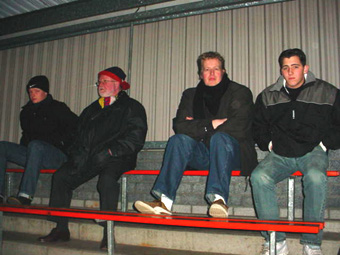
In het kader van de kwart finale van de Amstelcup
speelde Jong Roda in Hoensbroek tegen Jong Ajax.
Uiteraard waren de vaste Roda 2 Fanatics van
de partij.

Voor Roda betraden o.a. Rudge, Brouwers,
Lachambre, Vandenbroeck en Berglund het veld
terwijl Ajax onder leiding van John vh Schip aantrad
met Didulica, Seedorf, Boukhari en Esajas.
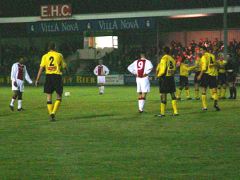
De mensen op de drukbezochte tribune zagen een
mooie wedstrijd waarin beide teams in de eerste
helft aan elkaar gewaagd bleken.
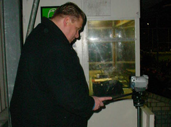
Omdat bij Roda de tijd ook niet stilstaat worden
tegenwoordig alle wedstrijden op video vastgelegd
voor computeranalyse. Stadionspeaker en praatjes-
maker Jos ontpopte zich als een Steven Spielberg.
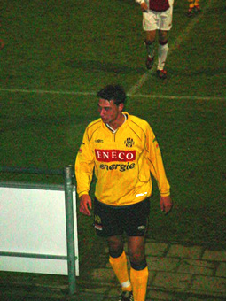
Voor het eerst op KPD: Coming man
Seydrihan Baslanti verlaat het veld bij
een ruststand van 0-0.
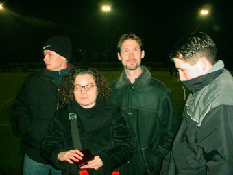
Gerrie Senden zag hoe Roda en Ajax ons een fraai
schouwspel voorschotelden.
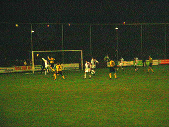
Hachelijke momenten voor het Ajax-doel. Roda
trok in de tweede helft de wedstrijd naar zich toe,
miste een handvol opgelegde kansen waaronder
een penalty: de pingel van Özcan Sonkaya werd op
bijzonder fraaie wijze gepareerd door Champions
League doelman Didulica.
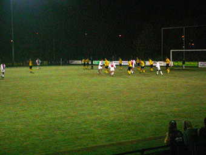
Omdat de stand op 0-0 bleef steken werd er
verlengd. Helaas en zeer tegen de verhoudingen in
scoorde Stefano Seedorf echter al na 2 minuten de
Golden Goal.
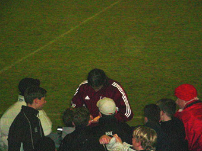
Terwijl Nourdin Boukhari de Hoensbroekse jeugd
na afloop trakteert op handtekeningen...
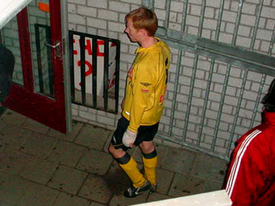
...verlaten de RJC-ers teleurgesteld het veld. Hier
de uitmuntende en nog immer gehavende
Vincent Lachambre.
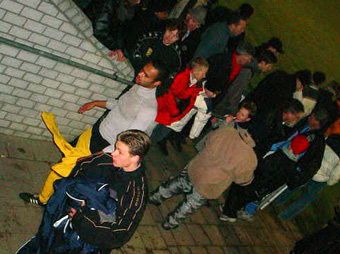
Gevolgd door een stevig balende Humphrey Rudge.
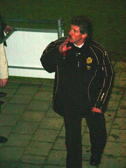
Oud-Roda- en Feijenoorddoelman en
huidige elftalbegeleider Bram Gildeman
maant het publiek tot kalmte.
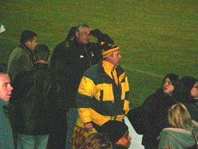
Al had dit weinig effect op Jan van de Arie Obdam
Fanclub.
Foto's: Danniëlle Quadakkers
Tekst: Marco Smeets
(teksten licht gemodificeerd door Koempel)